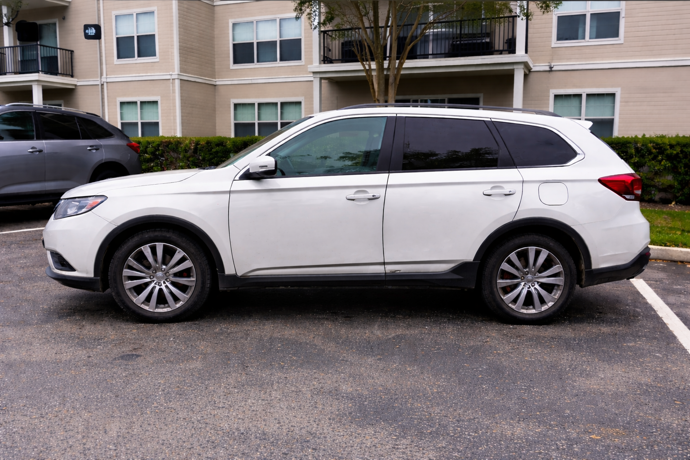

Exterior Detailing – Before & After
See the difference professional exterior detailing makes.


Our Exterior Car Detailing Services are designed to give your vehicle a thorough clean and shine, making it look as good as new. We focus on every detail — from washing and waxing to paint correction — ensuring your car’s exterior is spotless and protected.
At DETAIL X , we offer tailored exterior detailing packages to restore and protect your vehicle’s shine. Whether you need a simple refresh or a complete rejuvenation, our detailing professionals ensure stunning results.
Our Exterior Basic Detailing offers essential cleaning to keep your car fresh and glossy.
Have questions about our exterior detailing services? Here are answers to the most common questions our customers ask.
Our exterior detailing includes hand washing, paint decontamination, waxing or sealant application, wheel and tire care, glass cleaning, and exterior trim detailing.
Most exterior detailing services take between 1.5 to 3 hours depending on vehicle size and condition.
Yes, we are fully mobile and come to your home, office, or preferred location with all equipment required.
We recommend exterior detailing every 2–3 months to maintain paint protection and shine.
See the difference professional exterior detailing makes.
Book your professional exterior detailing today and experience premium results at your doorstep.